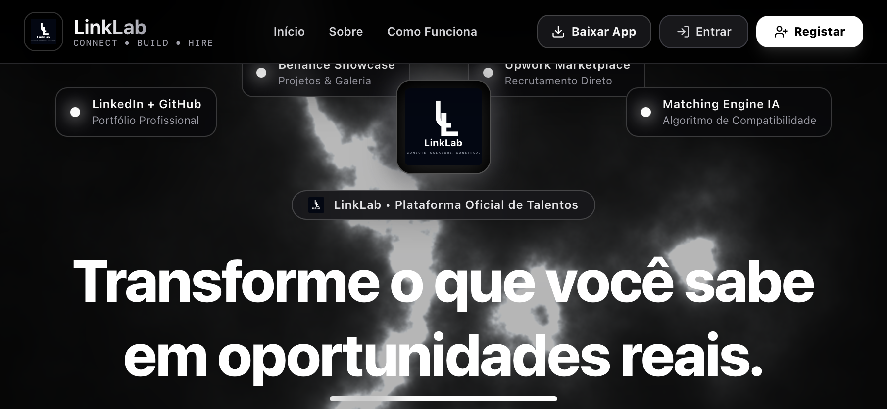

Estrutura
HTML semântico, organização de conteúdo, formulários e hierarquia clara para interfaces sólidas.
Sou uma pessoa extremamente ambiciosa.
Busco sempre desenvolver minha disciplina e consistência.
Permaneço sempre focado porque sei que meu futuro depende disso.
Estou construindo minha base em desenvolvimento web — HTML e CSS — com a mesma disciplina que aplico em tudo que faço. Além de estudante, sou empreendedor: gosto de assumir responsabilidade pelos meus resultados e de transformar aprendizado em prática real, projeto após projeto.
"O Onorio é um jovem diferenciado, muito esforçado e muito focado naquilo que ele acredita. Ele tem uma visão diferente das coisas, ele está construindo disciplina, consistência, ele tem princípios inegociáveis, sei que ele vai chegar longe."
"Tenho acompanhado a tua evolução e posso dizer que te destacas pela iniciativa, disciplina e vontade de ir além do que é exigido. Não és apenas um aluno que aprende tecnologia, és alguém que procura transformar o conhecimento em projetos concretos e construir algo maior para o futuro."
Minha base técnica está nos fundamentos da web — a estrutura e o visual de qualquer interface começam aqui. É onde concentro meu estudo agora, com prática constante em projetos reais.
Estruturação semântica de páginas, formulários e conteúdo acessível.
Layouts responsivos com Flexbox e Grid, estilização e identidade visual.
.hero-lines{
background-image:repeating-linear-gradient(
0deg, transparent, transparent 39px, var(--line) 40px
);
mask-image:linear-gradient(to bottom, black, transparent 85%);
}É esse CSS que desenha as linhas horizontais atrás do meu nome, lá no topo da página — feito só com gradiente e máscara, sem imagem nenhuma.
Além das ferramentas, desenvolvo a capacidade de transformar fundamentos em interfaces consistentes, responsivas e cuidadosamente construídas.
HTML semântico, organização de conteúdo, formulários e hierarquia clara para interfaces sólidas.
Composição visual, tipografia, espaçamento, contraste e sistemas de componentes com CSS.
Layouts pensados para diferentes dimensões de tela, mantendo proporção, legibilidade e intenção visual.
Microdetalhes, estados de interação, animações e acabamento para elevar a percepção de qualidade.
Defino o objetivo, a informação essencial e a experiência que a página precisa entregar.
Organizo o HTML antes de trabalhar a aparência, criando uma base clara e semântica.
Uso CSS para transformar a estrutura em uma interface responsiva, consistente e visualmente precisa.
Reviso espaçamentos, estados, movimento, acessibilidade e comportamento em diferentes telas.
Instituto de Transportes e Comunicações (ITC), Maputo.
Prática constante de HTML e CSS através de cursos on-line e projetos pessoais, construindo experiência real fora da sala de aula.
Landing page de um chat estatístico premium fictício, com interface de conversa interativa que responde perguntas sobre receita, retenção, previsão e anomalias usando reconhecimento de palavras-chave.
Este projeto representa a aplicação prática da base técnica apresentada neste portfólio.
Gerador de QR codes personalizável com pré-visualização instantânea, múltiplos formatos de conteúdo (URL, texto, Wi-Fi, contacto, email, SMS) e exportação em PNG/SVG.
Remove o fundo de fotos instantaneamente no navegador, sem enviar nada para servidores nem precisar de conta.

Plataforma avançada de networking entre jovens estudantes globalmente.
Leve este portfólio com você. Obtenha meu currículo completo abaixo.
Onorio Cuna CVEstou disponível para oportunidades de estágio e emprego em desenvolvimento web. Escolha o canal que preferir — respondo rápido.